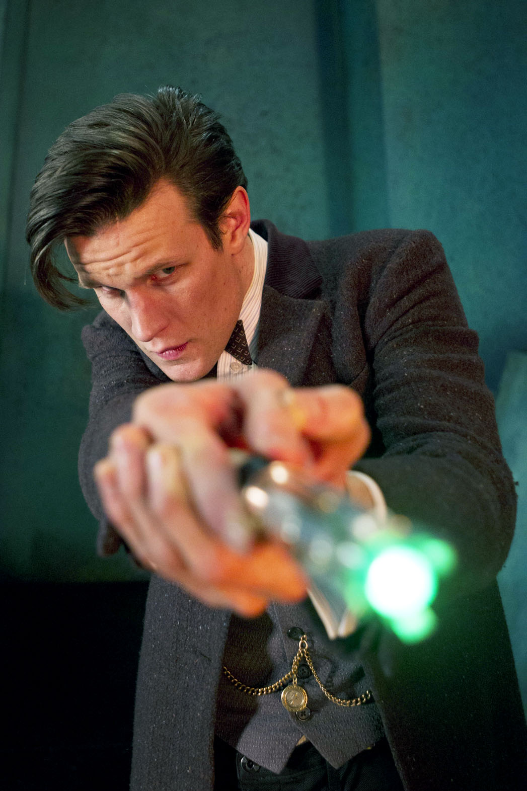

Pennyworth
2. Sezon 1. Bölüm
access_time Ortalama 1 saat 09 dakika
assistant_photo Aksiyon, Suç, Dram
Dizinin diğer bölümleri (Devam Ediyor)
| Durum | Sezon | Bölüm | Bölüm Adı | Yayınlanma tarihi |
|---|---|---|---|---|
| check | 2. Sezon | 1. Bölüm | Unknown | 13 Aralık 2020 |
| brightness_1 | 2. Sezon | 2. Bölüm | Unknown | 20 Aralık 2020 |
@kenkroukes
Tam 007 havasında ama daha teknolojik olmayan ve eski zamanda geçeni

@alipoyraz1719
Resmen kurtlar vadisi londra
@karalarinsulo
@alipoyraz1719 ahahah güldürdün :) ben de neye benzetiyorum diyordum
 @kenkroukes
@kenkroukes
Batman'in film ve dizilerine nazaran şimdiye kadar gördüğüm en harika Alfred. Hastayım sana alfi